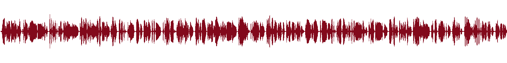
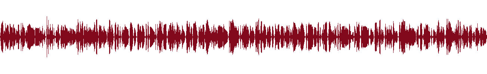
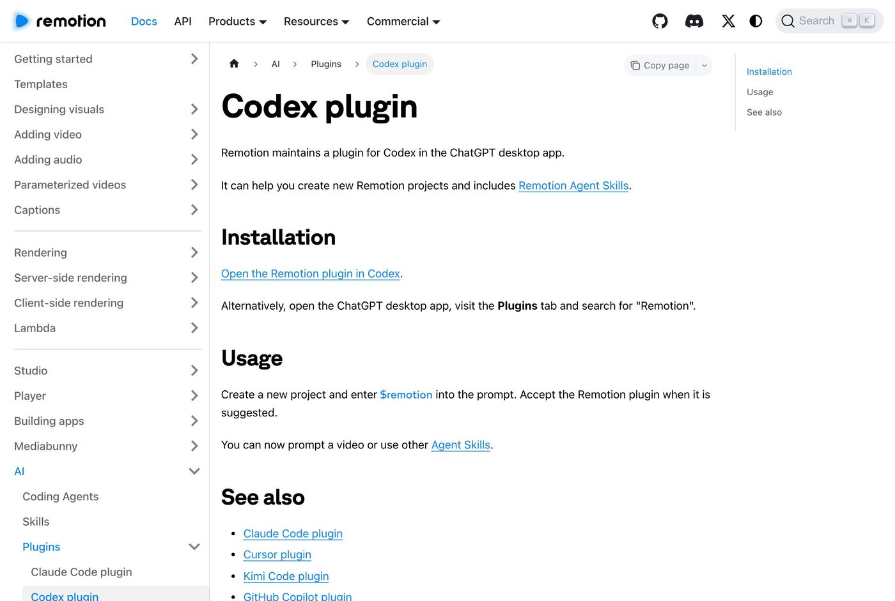
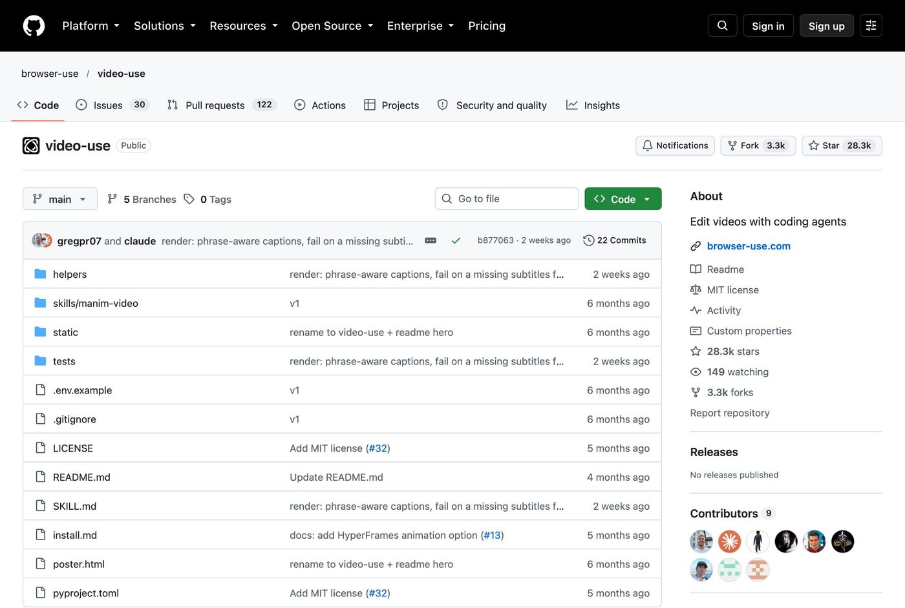
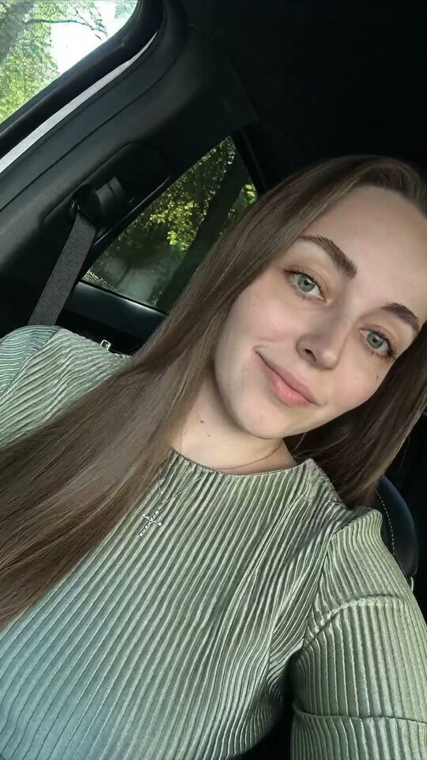
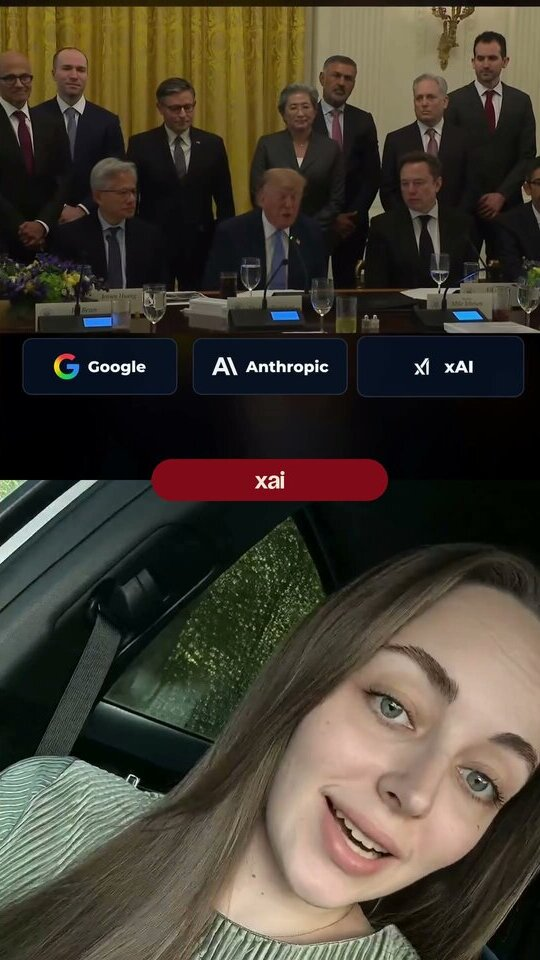
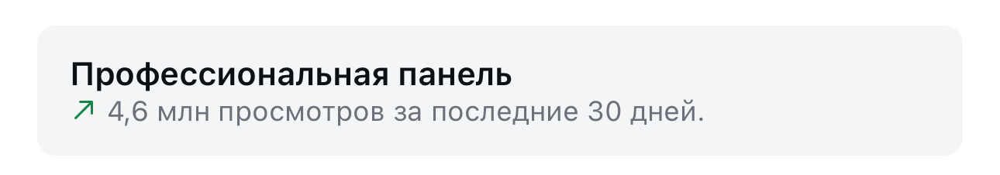
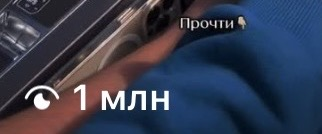

автомонтаж
Загружаешь исходник, а нейросеть сама режет паузы, ставит субтитры и собирает готовый ролик. Пошагово, со скринами и проверкой на моих рилсах
Раньше рилс с говорящей головой - это час в монтажке: найти паузы, вырезать оговорки, набить субтитры, подогнать по времени. Теперь ты пишешь задачу словами, как монтажёру
Звучит как реклама, поэтому вот замер на моём настоящем рилсе. Сверху дорожка голоса до монтажа, снизу после. Тишину между фразами вырезало автоматически, ни одной склейки руками


Рилс «Трамп и соглашение по ИИ», 6 октября 2026. Восемь с половиной секунд тишины ушли, текст не потерял ни слова
Remotion - это движок, который собирает видео по команде. Его разработчики сами выпустили плагин для ChatGPT, вот их официальная страница

Куда нажать. Скачай приложение с chatgpt.com/download и войди своим аккаунтом. Есть для Mac и для Windows
Что увидишь. Слева в меню пункты «Чаты», «Codex», «Плагины», «Настройки»
Что это даёт. Плагины живут в приложении для компьютера, в обычной вкладке браузера их нет
Куда нажать. Вкладка «Плагины» → в поиске набери Remotion → «Добавить»
Что увидишь. Плагин Remotion в списке подключённых
Что это даёт. Ставится один раз и дальше работает для каждого ролика
Куда нажать. Создай новый проект, прикрепи своё видео и напиши в начале сообщения $remotion. Когда ChatGPT предложит плагин, прими его. Вот промпт, которым можно начать:
Что увидишь. Нейросеть расшифрует речь, найдёт тишину, вырежет её, наложит субтитры и сохранит готовый MP4 в папку на компьютере
Что это даёт. Готовый ролик без монтажной программы и без таймлайна
Куда нажать. Пиши правку в этом же чате, как монтажёру: «субтитры выше», «убери зум в начале», «сделай темп быстрее»
Что увидишь. Переделанный ролик в той же папке
Что это даёт. Правки за минуты, а не перемонтаж с нуля
video-use - открытый бесплатный инструмент, у него 28 тысяч звёзд на GitHub. Ты кладёшь сырые записи в папку, говоришь с Claude, и на выходе получаешь готовый final.mp4. Он вырезает «эээ» и неудачные дубли, делает плавные склейки без щелчков, красит цвет и жжёт субтитры

Куда нажать. Открой Claude Code и вставь в чат официальную фразу установки из README:
Set up https://github.com/browser-use/video-use for me. Read install.md first to install this repo, wire up ffmpeg, register the skill with whichever agent you're running under, and set up the ElevenLabs API key.Что увидишь. Claude сам скачает инструмент, поставит ffmpeg (программу, которая собирает видео) и попросит ключ ElevenLabs
Что это даёт. Не нужно разбираться в установке, всё делает агент
Куда нажать. Зарегистрируйся на elevenlabs.io, в профиле создай API-ключ и отдай его Claude, когда он спросит
Что увидишь. Ключ попадёт в файл .env внутри инструмента
Что это даёт. ElevenLabs расшифровывает речь до долей секунды, по этой расшифровке и режется видео
Куда нажать. Открой Claude Code в папке со своими записями и напиши задачу обычными словами:
Что увидишь. Сначала Claude расскажет план монтажа простыми словами и спросит, согласна ли ты. После «да» соберёт ролик и сам его проверит. Файл появится в папке edit/final.mp4
Что это даёт. Ты утверждаешь смысл, а нарезку делает он
Первые два способа хороши, но каждый раз приходится заново объяснять, как ты хочешь. Решение - записать свои правила в один файл-навык. Агент читает его перед каждым роликом и уже знает твой стиль
Вот так выглядят мои правила монтажа. Это сокращённая выдержка из настоящего файла, по которому собираются мои рилсы:
Теперь на каждый новый ролик я пишу одну фразу: «смонтируй по моим правилам». Вот что получается на выходе:

До
ПослеСлева сырая запись, справа тот же момент в готовом рилсе: сплит, субтитр в пилюле на шве, ни одной ручной склейки
remotion.dev/docs/ai/codex-plugin - официальная страница плагина Remotion для ChatGPTgithub.com/browser-use/video-use - video-use: установка, примеры, все возможностиЯ одна, в декрете, без команды собрала этот завод сама. Автомонтаж - один кирпич. Какие ролики снимать, как превращать их в заявки и как соединить монтаж, тексты и воронку в одну машину, за тебя никто не решит
Мой блог ведут ИИ-агенты: находят темы, которые уже залетели, пишут сценарии, собирают рилсы с цифровым двойником и выдают материалы по кодовым словам. Я проверяю и принимаю решения




Три рилса по миллиону просмотров и больше, без рекламы и без команды
Ту же систему из нейросетей я собираю для экспертов: контент, автоворонки, боты, сайты и продажи. Дизайнер, монтажёр, таргетолог, копирайтер и менеджер по продажам в проекте не нанимались, их работу закрыли нейросети
Поставить плагин - десять минут. Собрать свой контент-завод под то, чем ты занимаешься, - другая работа, и начинается она с разбора твоих задач
На консультации разбираю, как выстроить такой завод у тебя
Напиши слово
мне в личку Telegram
НаписатьМои каналы и страницы